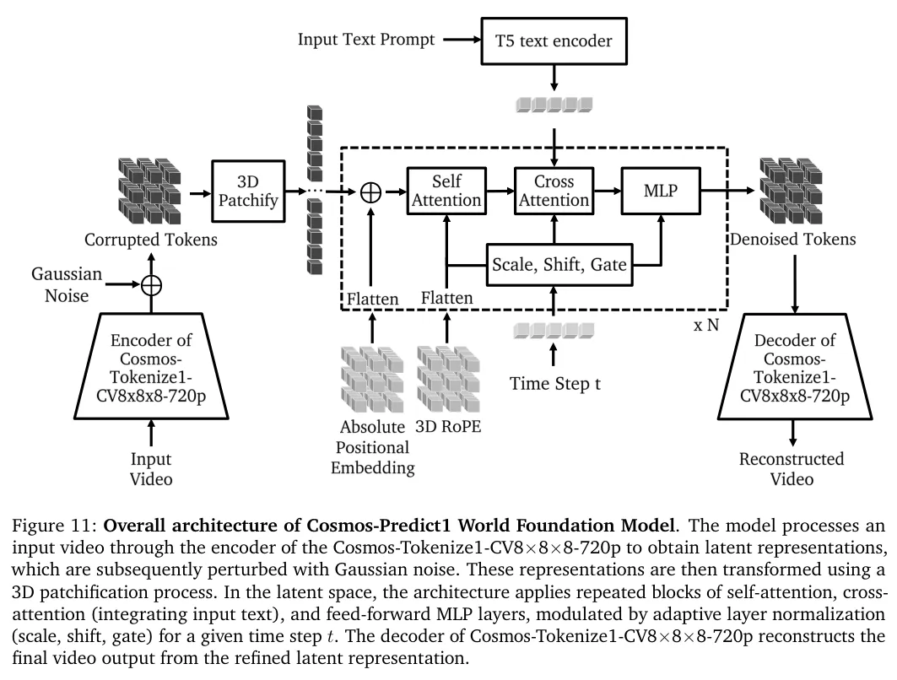
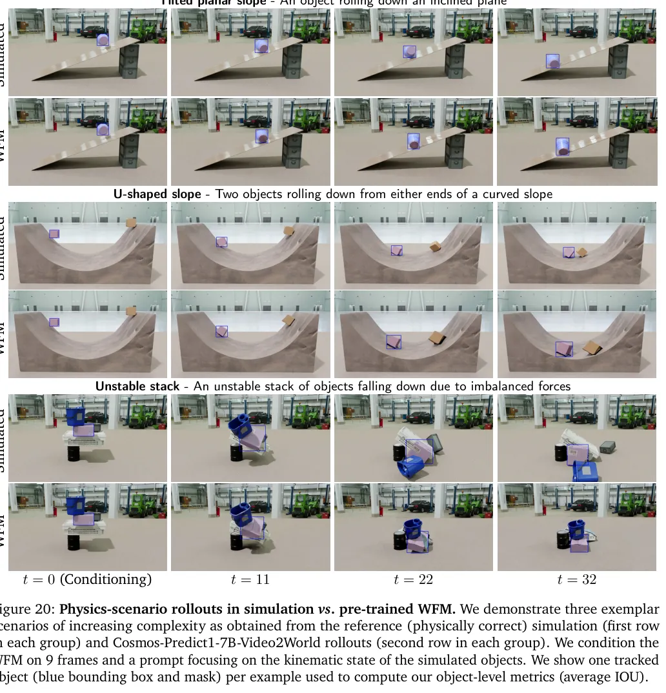

原文："We build our diffusion-based WFM based on the EDM framework (Karras et al., 2022) ... corrupt a clean video latent x0 ... xσ = x0 + σε ... network Dθ is trained to predict the clean x0 ... objective E[λ(σ)‖Dθ(xσ;σ,c)−x0‖²]"
x_σ = x₀ + σε → loss = E[ λ(σ)·‖ D_θ(x_σ; σ, c) − x₀ ‖² ] （c=条件，如文本）
原文："our denoiser network Dθ ... builds upon DiT (Peebles & Xie, 2023) ... applies repeated blocks of self-attention, cross-attention (integrating input text), and feed-forward MLP layers, modulated by adaptive layer normalization (scale, shift, gate) for a given time step t."
adaLN(scale/shift/gate)：把"当前噪声档 t / σ"调制进每层归一化——让网络知道现在噪声多大（对应 Ch1 里网络要吃 σ）。
用 Cosmos-Tokenize1-CV8×8×8-720p 的连续 latent。

Figure 11（原文）：Overall architecture of Cosmos-Predict1 World Foundation Model. The model processes an input video through the encoder of Cosmos-Tokenize1-CV8×8×8-720p ... perturbed with Gaussian noise ... 3D patchification ... repeated blocks of self-attention, cross-attention (integrating input text), and feed-forward MLP layers, modulated by adaptive layer normalization (scale, shift, gate) for a given time step t ...
Training Strategy §5.1.3
原文："Joint image and video training ... interleaves batches of image and video data ... a domain-specific normalization scheme that aligns the latent distributions ... frame-wise and channel-wise standardization ... better approximate an isotropic Gaussian prior."
原文："modifications to the standard transformer ... 1) 3D-aware positional embeddings, 2) cross-attention to enable textual inputs ... 3) QK-Normalization ... encoding input video through the encoder of Cosmos-Tokenize1-DV8×16×16 to generate discrete tokens ... 3D RoPE ... cross-attention module that incorporates encoded text prompts (processed via a T5 text encoder)."
Figure 14（原文）：Architecture of Cosmos-Predict1-Video2World Model ... encoding input video through the encoder of Cosmos-Tokenize1-DV8×16×16-720p to generate discrete tokens ... transformer blocks ... absolute positional embedding and 3D RoPE ... cross-attention module that incorporates encoded text prompts (processed via a T5 text encoder), followed by a two-layer MLP ...
Diffusion Decoder：给离散 token"去糊" §5.2.5
原文："aggressive compression ... could lead to blurriness and visible artifacts ... especially in the autoregressive WFM ... where only a few integers ... We resort to the diffusion decoder ... by fine-tuning Cosmos-Predict1-7B-Text2Video."
Figure 15（原文）：Cosmos diffusion decoder training. During training, each input video is tokenized twice: one through the target discrete tokenizer (DV8×16×16) and the other through a less-constrained continuous tokenizer (CV8×8×8). The discrete token video is used as the conditional input to the diffusion denoiser.
5.3 · 评估：3D 一致性 + 物理对齐 §5.3
原文："we evaluate our models on two aspects. First, ... the 3D consistency of the generated videos ... Second, ... the physics alignment ... how well the rendered dynamics adhere to the laws of physics."
维度
怎么测（原文）
为什么重要
3D 一致性
RealEstate10K 选 500 静态场景视频，用多视图几何工具测生成视频是否几何自洽
世界模型要模拟几何合理的 3D 世界，不能"穿帮"
物理对齐
看生成动态是否符合物理定律（如运动、碰撞）
Physical AI 的根本要求
论文也坦承："Evaluation of WFMs is a highly nontrivial task ... We leave a more comprehensive evaluation as future work." —— 呼应 Ch4 盲区：像素重建好 ≠ 世界模型强，3D/物理一致性才是关键且难测。

Figure 20（原文）：Physics-scenario rollouts in simulation vs. pre-trained WFM ... reference (physically correct) simulation vs Cosmos-Predict1-7B-Video2World rollouts ... conditioned on 9 frames and a prompt focusing on the kinematic state of the simulated objects.